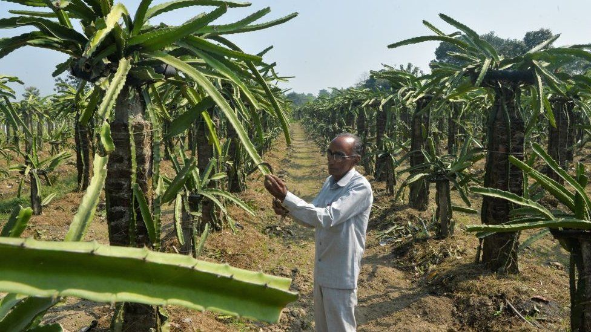
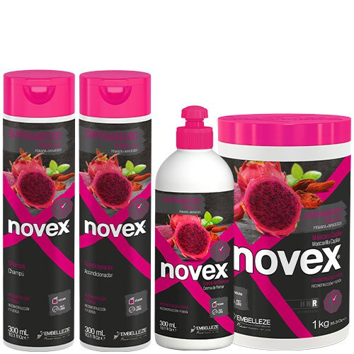
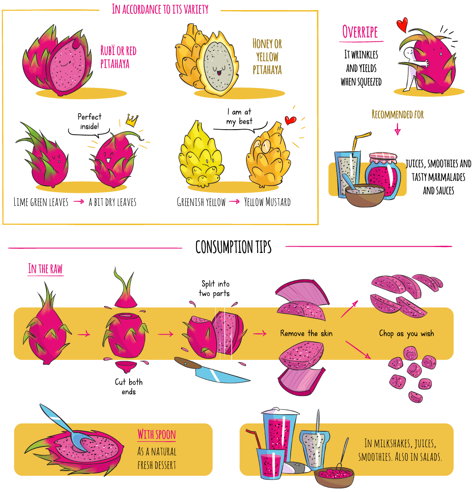

Curiosidades
Kamalam
O ministro-chefe de Gujarat, Vijay Rupani, em 19 de janeiro de 2021 renomeou a fruta pitaya para kamalam, sânscrito para a flor de lótus. O lótus é sagrado para os hindus e é a flor nacional da Índia.
 As relações caíram nos meses que antecederam a decisão entre a Índia e a China, cujas tropas estão presas em um tenso impasse ao longo de sua longa fronteira com o Himalaia. A Índia começou a cultivar frutos de dragão apenas nos últimos anos e agora é cultivada em partes de Gujarat também. Pertence a uma família de cactos - e acredita-se que ganhou seu temível nome porque sua camada externa pontiaguda se assemelha às escamas de um dragão. Embora seja uma fruta tropical nativa da América Central e seja em grande parte importada da América do Sul, muitos na Índia associam-na com a China por causa de seu nome.
Os rivais Índia e China são frequentemente descritos como o elefante e o dragão, respectivamente, e as relações entre os vizinhos têm sido especialmente congeladas desde que seus exércitos entraram em conflito no Himalaia no verão. A decisão do Estado de renomear o fruto foi anunciada na terça-feira pelo senhor deputado Rupani. O lótus também é o símbolo eleitoral do Partido Bharatiya Janata, ao qual ele e o primeiro-ministro indiano Narendra Modi pertencem. "O nome fruto do dragão não é apropriado, e devido ao seu nome se pensa na China. Então, demos o nome 'kamalam'", disse Rupani à imprensa local.
Receitas

Produtos
Dragon Fire é um vinho fermentado feito com 100% da polpa de frutas de dragão vermelho nativas da região Ilocos Norte. A bebida tem uma doçura suave, bem como uma torta suave, mas emite uma cor magenta vibrante.
A pitaya é uma fruta rica em vitamina C, ômega 3 e 6. Nos cabelos, ela ajuda a restaurar os fios e promover o alinhamento das pontes de cistina, devolvendo força e flexibilidade.
A Pitaya também pode ser encontrada em diversos produtos alimentícios, como chips, assim proporcionando uma textura crocante e sabor doce, podendo ser degustado direto do saco, ou adicionando sabor e textura exóticos a iogurtes, smoothies, cereais e saladas.
Dicas de Preparo
Fonte: www.tropicalmillenium.com